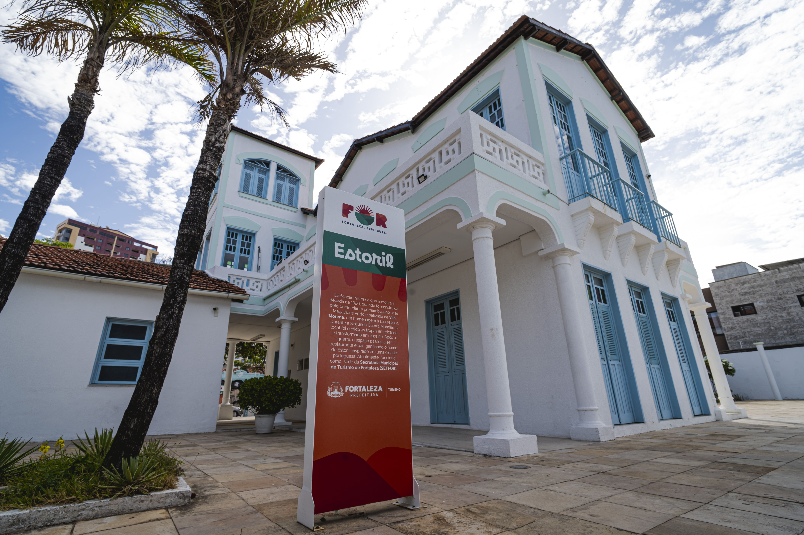
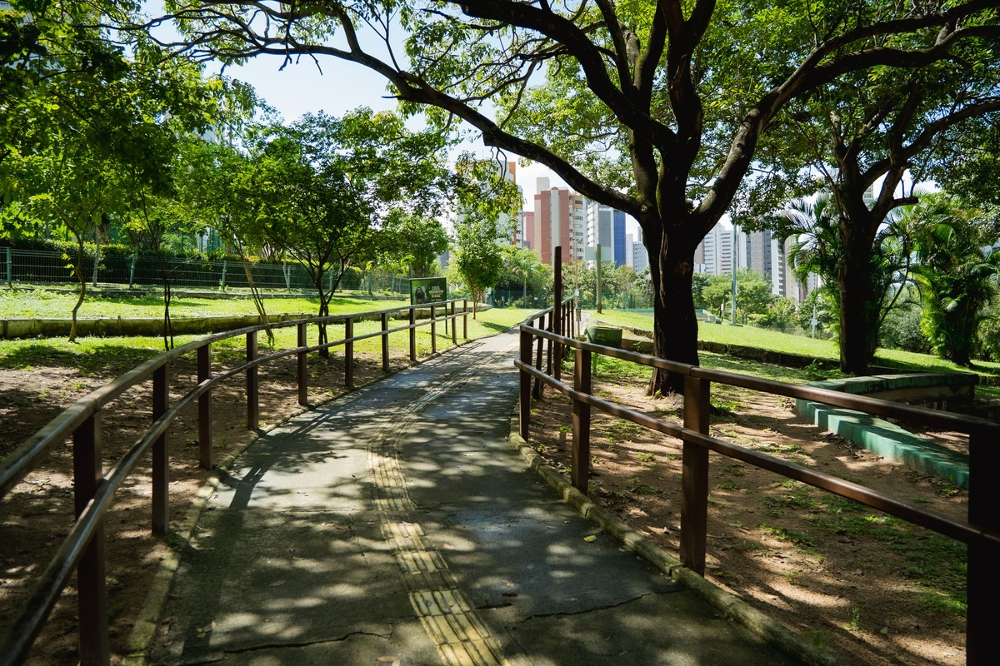
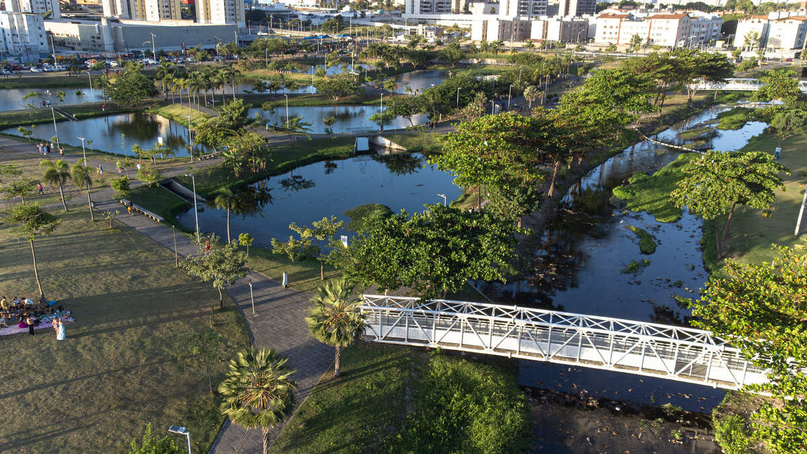
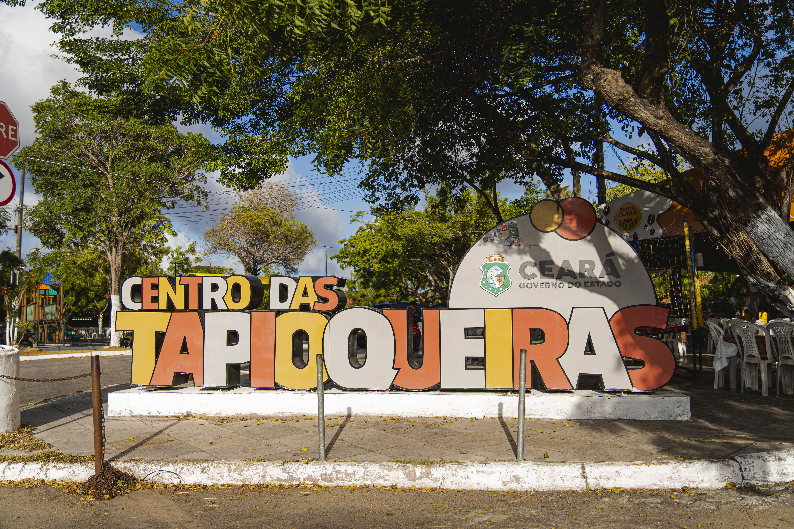

Lugares legais no Ceará
As águas claras de Lagoinha

Considerada uma das praias mais bonitas do Ceará, Lagoinha é um paraíso afastado da cidade onde costuma-se passar o dia, fazendo um bate-volta. Seu cenário é caracterizado por suas águas claras e muitas palmeiras. No passeio com a agência eles te levam de catamarã na Lagoa da Almécegas, uma pequena lagoa que também pode ser visitada por conta própria (R$5). Aproveite para visitar o Mirante da Vila ou optar por um passeio de buggy.
Estoril

O Estoril é uma das construções mais marcantes da história de Fortaleza e um símbolo da antiga arquitetura litorânea da cidade. Tombado como patrimônio histórico, o casarão foi palco de diferentes usos ao longo do século XX, de residência a espaço boêmio, ponto de encontro de artistas e intelectuais e restaurante. Hoje, o prédio abriga a Secretaria do Turismo de Fortaleza e uma Casa do Turista. Com endereço privilegiado, a poucos passos da praia e da Ponte dos Ingleses, o Estoril torna a visita ainda mais especial. Situado na Rua dos Tabajaras, um dos principais corredores da boemia fortalezense, o espaço está cercado por bares, restaurantes, feiras e festas que movimentam a vida cultural da Praia de Iracema. A região também recebe eventos sociais e artísticos ao ar livre, mantendo o espírito criativo e pulsante que sempre marcou o local.
Parque do Cocó

O Parque Estadual do Cocó é um dos maiores parques naturais em área urbana do Norte e Nordeste e o quarto maior da América Latina. Verdadeiro refúgio verde em Fortaleza, o parque preserva um extenso manguezal, trilhas ecológicas e dunas milenares, sendo o destino perfeito para quem busca tranquilidade, bem-estar e contato direto com a natureza. Referência em turismo de bem-estar na cidade, o Cocó oferece trilhas interligadas, áreas destinadas à prática de esportes passeios de barco pelo rio Cocó. A sua rica biodiversidade encanta visitantes que gostam de contemplação da flora e fauna, incluindo atividades como observação de aves. O parque também é uma ótima opção para famílias. Possui áreas para piqueniques, parques infantis, equipamentos de ecoaventura e abriga o projeto “Vem Pro Parque”, que reúne educação ambiental, cultura, lazer e sustentabilidade em uma programação semanal. Conta ainda com auditório e anfiteatro que recebem eventos e atividades comunitárias.
Parque Rachel de Queiroz

Premiado internacionalmente nas áreas de arquitetura, urbanismo e design, o Parque Rachel de Queiroz é hoje o segundo maior parque de Fortaleza e um dos mais importantes símbolos da transformação urbana da cidade. Com 10 km de extensão, o parque atravessa diferentes bairros e se destaca pelo uso da tecnologia Wetlands, um sistema de microlagoas interligadas que realiza o tratamento natural de efluentes, aliando sustentabilidade, inovação e contato direto com o meio ambiente. Além das áreas verdes, o Parque Rachel de Queiroz oferece espaços para piqueniques, ciclovias e pistas que recebem diariamente corredores e ciclistas. O local também se tornou palco para manifestações artísticas, como música, dança e teatro, e consolidou-se como destino gastronômico, reunindo diversos food trucks e opções de alimentação ao seu entorno.
Centro das Tapioqueiras

Localizado em Messejana, no início da CE-040, o Centro das Tapioqueiras é um dos polos gastronômicos mais tradicionais e autênticos de Fortaleza. Sua atmosfera acolhedora, aliada ao cardápio regional e à resistência cultural ao longo do tempo, tornam o espaço parada obrigatória para quem deseja vivenciar a culinária local. O centro reúne diversos boxes especializados, com estacionamento e área para crianças, oferecendo conforto para toda a família. Como o próprio nome indica, a tapioca é a grande estrela do lugar: são dezenas de opções, das versões mais simples às recheadas e doces, além de pratos típicos nordestinos como cuscuz e outras iguarias, tudo acompanhado de música e clima regional. O Centro das Tapioqueiras é o local ideal para quem visita Fortaleza e quer experimentar um café da manhã reforçado.